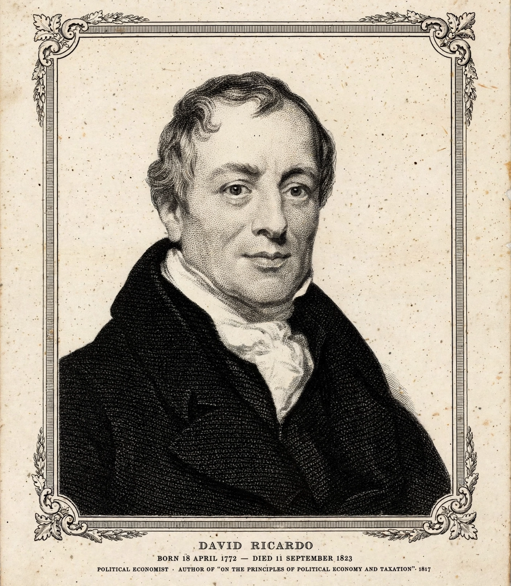

Ricardian equivalence
| Ricardian equivalence | |
|---|---|
 | |
| Named after | David Ricardo |
| Modern form | Robert Barro (1974) |
| Field | Macroeconomics, public finance |
Ricardian equivalence is an economic proposition holding that consumers are forward-looking and internalise the government's budget constraint when making consumption decisions. As a result, whether a government finances its spending by taxing now or by borrowing and taxing later, the effect on total demand is the same: rational households, anticipating the future taxes implied by present debt, save the full amount of any debt-financed tax cut, leaving consumption unchanged.
Origins
An early statement appears in the work of David Ricardo, who argued in his Essay on the Funding System (1820) that taxpayers might behave as if they recognised that government bonds represent future taxes — though Ricardo himself doubted people actually behaved this way in practice. The proposition was formalised and revived by Robert Barro in his 1974 paper "Are Government Bonds Net Wealth?", building on intergenerational altruism: parents who care about their children's welfare adjust bequests to offset future tax burdens, making fiscal policy neutral across generations.
Assumptions
- Forward-looking, altruistic households linked across generations by operative bequests.
- Perfect capital markets — households can borrow and lend at the government's interest rate.
- Lump-sum taxes — future taxes do not distort labour or saving decisions.
- Rational expectations — households fully anticipate the future tax implications of deficits.
Criticisms and evidence
Critics, including James Buchanan, Gerald O'Driscoll, and later economists such as James Tobin, note that liquidity constraints, myopia, finite lives without bequest motives, and distortionary taxes all break the equivalence. Empirical studies generally find partial offsets — households save some, but not all, of a debt-financed tax cut — so strict Ricardian equivalence is widely regarded as a useful benchmark rather than a description of reality. Its logic nevertheless underlies debates about fiscal stimulus and the long-run burden of public debt.